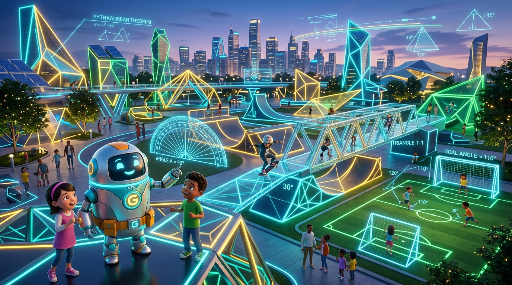

Yapay zekâya doğrudan cevabı çözdürmek yerine adım adım düşündüren Sokratik İpucu Koçu tasarla!
20 bölümün tamamında günlük yaşam açı problemlerini adım adım ipucu veren Sokratik koçluk yöntemiyle başarıyla çözdün!
📌 Canlı ders panelindeki ✏️ Cevapla butonuna tıklayın ve bu şifreyi girin!